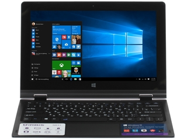

11.6" Ноутбук Irbis NB31 белый
Описание товара
Заниматься веб-серфингом, просматривать медиаконтент, играть и общаться с помощью ноутбука Irbis NB31 — одно удовольствие. Диагональ его экрана составляет 11.6″, разрешение 1366×768. Встроенная видеокарта Intel HD. 4-х ядерный процессор, а оперативная память типа DDR3 на 2 ГБ. Накопитель SSD — 32 ГБ.Два порта USB 2.0, встроенная веб-камера. Время автономной работы — 3 ч 30 мин.
Всего за - 11499 рХарактеристики товара
| Операционная система | Windows 10 |
| Диагональ экрана | 11.6" |
| Процессор | Intel Atom |
| Размер оперативной памяти | 2 ГБ |
| Жесткий диск | (SSD) 32 Гб |
Подробное описание товара
Заниматься веб-серфингом, просматривать медиаконтент, играть и общаться с помощью ноутбука Irbis NB31 — одно удовольствие. Это качественное и практичное решение, диагональ его экрана составляет 11.6″, глянцевое покрытие добавит краскам сочности и яркости, а с разрешением 1366×768 просмотр станет еще более комфортным. О хорошей графике позаботится встроенная видеокарта Intel HD. За быстродействие и хороший разгон системы даже в условиях многозадачности отвечают 4 ядра процессора, и оперативная память типа DDR3 на 2 ГБ. Причем последнюю можно увеличить посредством карт памяти до 8 ГБ. Если вы еще захотите усилить быстродействие ноутбука, то воспользуйтесь возможностью подключения к нему твердотельных накопителей (SSD), чем объем не должен превышать 32 ГБ. Благодаря 2 портам USB 2.0 можете подключать к Irbis NB31 флеш-карты. С встроенными веб-камерой и микрофоном вы можете использовать устройство для проведения видеоконференций и общения в чатах. 3 ч 30 мин — таково примерное время автономной работы ноутбука благодаря емкости аккумулятора в 10000 мАч.